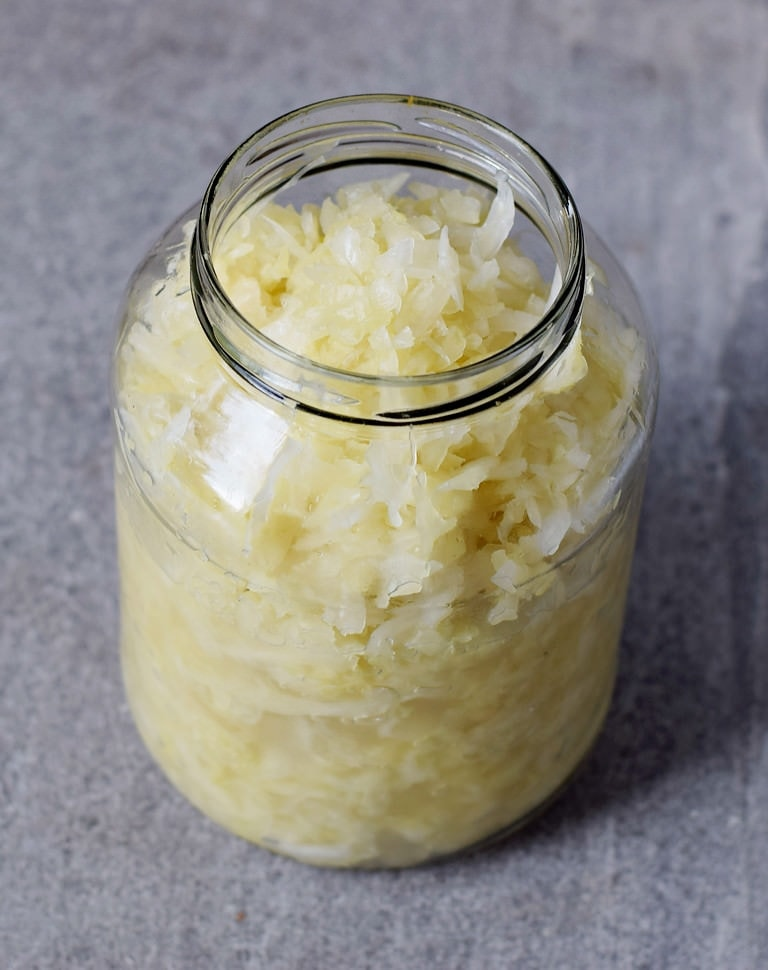

Sauerkraut

Ingredients
- cabbage
- salt
- Spices (juniper berry, bay leave, etc.)
Steps
- cut the cabbage into stripes
- add 10g salt for 1kg of cabbage
- for 10 minutes, squeeze the cabbage with your hands. There should be a lot of juice coming out
- fill the cabbage into glasses so there is just little air
- All the hard work is done! Now, you just need to wait for a week.
- Try your yummy delicious cabbage
href="../index.html"